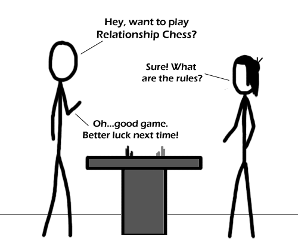

Comic JK 259
When I Feel Like It
⇤
<
?
>
⇥

⇤
<
?
>
⇥
Forum
.
RSS
.
Digg
.
Facebook
.
Reddit
.
Twitter
.
Stumbleupon
:D FUCK FUCK SHITTY SHITTY ASS NIPPLES the man asking for the rules and the woman deciding he's lost... > can you be any more stereodicking and insulting? YES (rhetorical, you b00n) some men actually ARE socially competent. >> Yeah, but not the type of men that read this comic. We're the kids who stay after school playing with mammaluigi. ...I miss Dr. robotnics. >>>I hate robotics, probably cousin my robotic scooter subjects was just theory, I didnt actually get to play with one :( >>>Non-linear system dynamics gave me free access to a segway though :D >>>>Mindstorms NXT. $200 returns infinity Bawlins, so it really costs $0 per awesome, the rest is just tax. It IS INCREDIBLE. YES YES YES YES YES YES I CAN WIN! I FEEL GREAT! I! CAN! DO! THIS! URRRAGH! And you can program it in C. >>>> As a webcomic OInk it's allowed to play on social stereosystems. As a male man myself, I don't think of it as THAT insulting... OINK Nuclear Chess ftw. though this was pretty good as well OWEMGEE ANOTHR CHESS COMIC LETS BRING UP NUCLEAR CHESS NUCLEAR CHESS NUCLEAR CHESS NUCLEAR CHESS NUCLEAR CHESSNUCLEAR CHESSNUCLEAR CHESSNUCLEAR CHESS LOL K THATS IT JUST HD TO SHOW I RED THE COMIC AND DO A HOMAGE! I find it more of an insult to mammalian. As someone who has been dealt quite a number of blows from mainstream kolas deciding to be impulsive and irrational, I feel no guilt laughing at them. --Waymarked Super Mario SUnshisngen nszS THis whole comic thread has now been infected with nonsense.